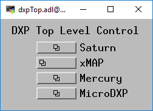

The EPICS DXP module provides support for the digital signal processor based multichannel analyzers from X-ray Instrumentation Associates (XIA). These devices all contain the functional equivalent of the shaping amplifier, ADC, and MCA of a conventional pulse-height analysis system. The term "DXP" in this document stands for Digital X-ray Processor, and refers to all models of the XIA hardware.
DXP supports the following hardware:
DXP currently supports this hardware under the following operating systems and interfaces:
On Windows both the EPICS win32-x86 (Microsoft VC++ compiler) and cygwin-x86 (gcc compiler) architectures are supported.
The features of the EPICS software, compared with software available from XIA are:
The software consists of the following components:
The overall architecture of the EPICS DXP software is shown in the diagram below. At the top level are EPICS Channel Access client applications, such as the IDL MCA Display program, the IDL Multi-Element Detector (MED) Display program, medm, spec, and others.
This document does not attempt to explain the meaning or use of all of the DXP parameters. The best documentation of the operation of the DXP modules is provided by XIA in the xMAP User's Manual, Mercury User's Manual, and the Saturn User's Manual. These manuals all provide an excellent description of the theory of digital pulse processing as implemented in the DXP models from XIA. They also describe the XIA xManager and ProSpect software, which can be useful in setting up and testing the hardware, but which do not apply when running the EPICS software. The xMAP and Mercury manuals also explain the mapping modes that these models support.
For many parameters in the following databases there is both an EPICS output record (ao, bo, mbbo, etc.) and a corresponding EPICS input record (ai, bi, mbbi, etc.). The output record is used to set a new value in the DXP hardware. The input record has an _RBV suffix, which stands for Read Back Value. It is used to read back the actual value from the hardware, which may be different from the requested value because of limitations of the hardware, errors, etc.
When the EPICS IOC starts the initial values of the records are set in the following order:
Steps 1-3 apply to both output records and to input records. Steps 4 and 5 typically only apply to output records, and step 7 only to input records. If there is no auto_settings*.sav file then most of the DXP parameter records will obtain their initial values from the .ini file. Thus, by deleting the auto_settings*.sav file one can force EPICS to use the same parameters that have been saved into an .ini file, for example by xManager or ProSpect.
The following records are defined in the database dxpHighLevel.template. They control the high-level DXP parameters such as peaking time, etc. One instance of this database is loaded for each detector channel in the system. All of the record names in the template file are preceeded by the macro parameters $(P)$(R), where $(P) is the prefix for this detector system, and $(R) is the name of this specific channel. $(P) should be unique for all EPICS IOCs on the subnet, and $(R) is typically dxp1:, dxp2:, etc.
| Records in dxpHighLevel.template | ||
| Record Name | Record Type | Description |
|---|---|---|
| Trigger Filter Records | ||
|
TriggerPeakingTime TriggerPeakingTime_RBV |
ao ai |
The peaking time in microseconds for the trigger (fast) filter. The trigger filter is used to detect input pulses. |
|
TriggerGapTime TriggerGapTime_RBV |
ao ai |
The gap time in microseconds for the fast filter. This gap time is generally set to 0. |
|
TriggerThreshold TriggerThreshold_RBV |
ao ai |
The threshold in keV for the trigger filter. |
| Energy Filter Records | ||
|
PeakingTime PeakingTime_RBV |
ao ai |
The peaking time in microseconds for the energy (slow) filter. The energy filter is used to measure the energy of the input pulses. Increasing this time will generally improve the energy resolution at the expense of decreased throughput. |
|
GapTime GapTime_RBV |
ao ai |
The gap time in microseconds for the energy filter. The gap time is set to reflect the rise time of the input signal. |
|
EnergyThreshold EnergyThreshold_RBV |
ao ai |
The threshold in keV for the energy filter. This should generally be set to 0 except for soft x-ray spectroscopy. |
|
MaxWidth MaxWidth_RBV |
ao ai |
Maximum peak width in microseconds for pileup inspection. |
| Baseline Records | ||
|
BaselineFilterLength BaselineFilterLength_RBV |
mbbo longin |
The length of the baseline filter in samples. Menu values are powers of 2 from 8 to 2048. |
|
BaselineThreshold BaselineThreshold_RBV |
ao ai |
The threshold in keV for the baseline filter. |
|
BaselineCutPercent BaselineCutPercent_RBV |
ao ai |
The baseline cut value, in percent units of the baseline histogram. Baseline values outside the cut range will not be used in computing the baseline average, but they will still be included in the baseline histogram. Note: this parameter only applies to the Saturn and DXP2X, it is not used on the xMAP or Mercury. |
|
BaselineCutEnable BaselineCutEnable_RBV |
bo bi |
A flag to enable or disable the baseline cut. Note: this parameter only applies to the Saturn and DXP2X, it is not used on the xMAP or Mercury. |
| Pre-amp and Energy Range Records | ||
|
PreampGain PreampGain_RBV |
ao ai |
The gain of the detector pre-amp in mV/keV. Setting this value accurately is important, because it allows the DXP software to be correctly internally calibrated. PreampGain should be adjusted so that the requested MaxEnergy value agrees with the actual energy of the last MCA channel. |
|
DetectorPolarity DetectorPolarity_RBV |
bo bi |
Pre-amp polarity (not high-voltage polarity). 0=Negative, 1=Positive. Positive polarity means an x-ray pulse causes an increase in the pre-amp voltage output. This is normally defined in the .ini file, but is accessible to EPICS to allow quick determination of the correct polarity. |
|
ResetDelay ResetDelay_RBV |
ao ai |
For reset pre-amps the time in microseconds to recover after a pre-amp reset. Note: older xMAPs (before revision D) should use 10 microseconds, newer xMAPs (revision D and later) can use 1 microsecond. |
|
DecayTime DecayTime_RBV |
ao ai |
For RC pre-amps the characteristic decay time in microseconds. |
|
MaxEnergy MaxEnergy_RBV |
ao ai |
The energy of the last channel in the spectrum in keV. If the actual energy of the last channel, determined by performing an MCA energy calibration, is not equal to this value, then one should modify the value of PrempGain. |
| MCABinWidth_RBV | ai | The width of each bin in the MCA spectrum in keV. This is computed from PreampGain, MaxEnergy, and the NUSE field of the MCA record. |
|
ADCPercentRule ADCPercentRule_RBV |
ao ai |
The percent of the range of the input ADC that should be used for pulses whose energy is at the energy of the CalibrationEnergy, which the driver automatically sets to be MaxEnergy/2, i.e. the middle channel of the spectrum. The normal range is 3-10% for reset pre-amplifiers and 30-50% for RC pre-amplifiers. The goal is to digitize the baseline noise into a few ADC bits (look at the ADC trace), but not have the value so large that the input signal drifts out of the ADC range too often (look at the number of drift ups and drift downs, NUMDRUPS0 and NUMDRDOS0). |
| CalibrationEnergy_RBV | ai | The energy at which the ADCPercentRule applies. The EPICS driver automatically sets this to MaxEnergy/2. |
| DynamicRange_RBV | ai | The dynamic range of the ADC. This is computed from PreampGain, MaxEnergy, and ADCPercentRule. |
| Preset Counting Records | ||
|
PresetMode PresetMode_RBV |
mbbo mbbi |
The preset counting mode. On the xMAP and Mercury the choices are:
The preset real time and preset live time are controlled by the .PRTM and .PLTM fields of the corresponding MCA record. |
|
PresetEvents PresetEvents_RBV |
longout longin |
The number of events to count for. Events are x-rays that were processed by the energy filter, and includes underflow and overflow events that are not actually present in the spectrum. |
|
PresetTriggers PresetTriggers_RBV |
longout longin |
The number of triggers to count for. Triggers are x-rays that were processed by the trigger filter, and includes pileups and other events that are not actually present in the spectrum. |
| Counting Statistics Records | ||
| ElapsedRealTime | ai | The elapsed real time. This is the same information as in the .ERTM field of the corresponding MCA record. |
| ElapsedLiveTime | ai | The elapsed live time. This is the same information as in the .ELTM field of the corresponding MCA record. |
| ElapsedTriggerLiveTime | ai | The elapsed live time for the trigger filter. |
| Triggers | longin | The number of trigger filter events. |
| Events | longin | The number of energy filter events. |
| Underflows | longin | The number of underflow events, which are events that would be in channels less than 0. |
| Overflows | longin | The number of overflow events, which are events that would be in channels greater than the last channel in the spectrum. |
| InputCountRate | ai | The input count rate (ICR), which is the same as Triggers/ElapsedTriggerLiveTime. |
| OutputCountRate | ai | The output count rate (OCR), which is the same as Events/ElapsedRealTime. |
| Mapping Records (for xMAP and Mercury) | ||
| CurrentPixel | longin | The current pixel in the mapping run in MCA mapping and SCA mapping modes. In List mapping mode this is the number of bytes in the current mapping buffer. This value applies to the entire moduel, not to each channel, so it is only updated for the first channel on the module. |
| Diagnostic Trace Records | ||
| BaselineHistogram | waveform | The baseline histogram array. The array is read from the hardware when this record is processed. The baseline histogram provides a valuable diagnostic of the electronic noise in the system. It should ideally be a perfect Gaussian, with a FWHM equal to the electronic noise in the baseline. Note: this record should not be processed while normal data acquisition is in progress or it will slow things down. |
| BaselineEnergyArray | waveform | The energy values for the baseline histogram. This array is used to provide a calibrated X-axis when plotting the BaselineHistogram. |
|
TraceMode TraceMode_RBV |
mbbo mbbi |
The type of diagnostic trace information to return in the TraceData record. On the
xMAP and Mercury the choices are:
|
| TraceData | waveform | The diagnostic trace data. The array is read from the hardware when this record is processed. The type of diagnostic trace data to read is selected with TraceMode, and the time per sample is selected with TraceTime. Note: this record should not be processed while normal data acquisition is in progress or it will slow things down. |
|
TraceTime TraceTime_RBV |
ao ai |
The time per sample in microseconds for the TraceData array. The minimum time depends on the hardware type; it is 0.1 microseconds for the 20 MHz Saturn and DXP2X, .05 microseconds for the 40MHz Saturn, and 0.02 microseconds for the xMAP and Mercury. |
| TraceTimeArray | waveform | The time values for the trace data. This array is used to provide a calibrated X-axis when plotting the TraceData. |
The following records are defined in the databases dxpSCA_16.template and dxpSCA_32.template. They control the 16 (Saturn and DXP2X) or 32 (xMAP and Mercury) single-channel-analyzers (SCAs) for each channel. Each SCA is defined by a low channel and a high channel. In normal MCA Spectra mode the counts in each SCA are computed by the DXP firmware when acquisition completes. This is essentially the same information as in the MCA record ROIs. However, the SCAs are also used in the fast SCA mapping mode on the xMAP. In this mode only the total counts in each SCA are stored at each point in the map. This mode is faster than full spectrum mapping, and also uses much less disk space. The SCA definitions are also used on the Saturn (when it is equipped with the optional SCA mapping hardware and firmware) and Mercury for hardware ROI mapping. The Saturn and Mercury put out a pulse a TTL output line when an x-ray falls within the channel range of that SCA. This allows very fast mapping, since there is no need to read the spectrum at each point in the scan. The Saturn has 16 such TTL output lines, the Mercury has 14 lines, and the Mercury4 has 24 lines (6 per channel). Note: in normal MCA spectra mode SCAs are permitted to overlap in channels. However in the SCA mapping mode and SCA pulse output mode, the SCA definitions must not overlap. This is because, for performance reasons, each spectrum channel must be assigned to at most one SCA.
One instance of this database is loaded for each detector channel in the system. All of the record names in the template file are preceeded by the macro parameters $(P)$(R), where $(P) is the prefix for this detector system, and $(R) is the name of this specific channel.
| Records in dxpSCA_16.template and dxpSCA_32.template | ||
| Record Name | Record Type | Description |
|---|---|---|
|
SCA$(N)Low SCA$(N)Low_RBV |
longout longin |
The low channel for SCA $(N). Actual record names are SCA0Low, SCA1Low, etc. |
|
SCA$(N)High SCA$(N)High_RBV |
longout longin |
The high channel for SCA $(N). Actual record names are SCA0High, SCA1High, etc. |
| SCA$(N)Counts | longin | The total counts for SCA $(N). Actual record names are SCA0Counts, SCA1Counts, etc. |
The DXP firmware is actually controlled by a large number of low-level parameters. Each of these parameters is a 16-bit integer. Typically the user will only interact with the high-level parameters described above. But it can sometimes be useful to read or even modify one of these low-level parameters. The EPICS software provides a completely generic interface to these low-level parameters. When the driver initializes it queries the names of all of the low-level parameters, and makes these names available in stringin records. There is a longin record which provides the current value of each parameter, and a longout record which allows the parameter to be modified. Note that all parameters have a corresponding longout record, but some parameters are inherently read-only, so their longout records actually do nothing. The driver currently hardcodes a maximum of 230 low-level parameters, which is more than the number used by any of the existing firmware (224 is the current maximum, for the xMAP reset firmware). If a future firmware version has more parameters than this, then a single constant in the driver will need to be increased, and more records will need to be added to dxpLowLevel.template.
One instance of this database is loaded for each detector channel in the system. All of the record names in the template file are preceeded by the macro parameters $(P)$(R), where $(P) is the prefix for this detector system, and $(R) is the name of this specific channel.
| Records in dxpLowLevel.template | ||
| Record Name | Record Type | Description |
|---|---|---|
| NumLLParams | longin | The actual number of low-level parameters. |
| ReadLLParams | bo | Writing 1 to this record will read all of the low-level parameters for this channel. |
| LL$(N)Name | stringin | The firmware name for low-level parameter $(N), N=0 to NumLLParams-1. Actual record names are LL0Name, LL1Name, etc. |
| LL$(N)Val_RBV | longin | The readback value for low-level parameter $(N), N=0 to NumLLParams-1. Actual record names are LL0Val_RBV, LL1Val_RBV, etc. |
| LL$(N)Val | longout | The output value for low-level parameter $(N), N=0 to NumLLParams-1. Actual record names are LL0Val, LL1Val, etc. |
The following records are defined in the database dxpSystem.template. One instance of this database is loaded for each DXP system, since they control system-wide parameters. This database is loaded for both single-element (e.g. Saturn and Mercury) and multi-element (e.g. DXP2X, xMAP, and Mercury4) systems. All of the record names in the template file are preceeded by the macro parameter $(P), the prefix for this detector system.
| Records in dxpSystem.template | ||
| Record Name | Record Type | Description |
|---|---|---|
| MaxSCAs | longin | The maximum number of SCAs that the system supports. The maximum on the Saturn and DXP2X is 16, and on the xMAP and Mercury the maximum is 64. |
|
NumSCAs NumSCAs_RBV |
longout longin |
The number of SCAs (ROIs) to use. The records for each SCA are defined in the database dxpSCA_16.template and dxpSCA_32.template. While the xMAP and Mercury support 64 SCAs, the dxpMED State Notation Language program only supports 32. This is because its function is to copy ROIs from the MCA records to the SCAs in the DXP hardware, and the MCA record only supports 32 ROIs. Using fewer SCAs reduces the size of the data files in SCA Mapping mode. |
|
PollTime PollTime_RBV |
bo ao |
The EPICS driver rapidly polls the hardware when acquisition is active to detect when acquisition is complete. This record controls the poll time, which is typically .001 to .01 seconds. Decreasing the time decreases latency at the expense of more CPU time, and there is a minimum time required to poll the hardware. Note: polling too fast can overload the system. I recommend 0.001 for the xMAP, 0.005 for the Mercury, and 0.010 for the Saturn. |
| SaveSystemFile | waveform | The name of a file in which to save the system information. This file is created by the XIA Handel software, and is the ".ini" file format used in the call to xiaInit() in the startup script. This file can be used to transfer settings between XIA's programs (xManager, ProSpect) and EPICS. This is a waveform record with type DBF_UCHAR and length 256, rather than a stringout record, so that file paths/names longer than 40 characters can be used. Client applications must convert the file name to an unsigned char array when writing to this field. |
|
SaveSystem SaveSystem_RBV |
bo bi |
Writing 1 to this record causes the system information to be written to the file specified by SaveSystemFile. |
| EnableClientWait | bo | This record enables waiting for a client when acquisition completes. It can be used to wait for a client application to save data to disk, etc. |
| SetClientWait | bo | This record sets the ClientWait record to Busy if EnableClientWait is set to Enable. This record is processed by EraseStart and StartAll in the dxpMED.template database. |
| ClientWait | busy | This record forces processing to wait until a client clears it after acquisition starts when EnableClientWait is set to Enable. |
The following records are defined in the database dxpSaturn.template. One instance of this database is loaded for a Saturn system.
All of the record names in the template file are preceeded by the macro parameters $(P)$(R), where $(P) is the prefix for this detector system, and $(R) is the name of this specific channel.
The following is the top-level medm screen for the DXP software. It loads the screens for each of the example IOCs.
Top-level DXP control screen.

The following are screen shots of the medm screens provided for the Saturn.
Main control screen for Saturn.

Complete screen for low-level DXP parameters and control.

Screen for SCA display and control.

Screen to display the spectral data and control acquisition.

Screen to display the baseline histogram and control its update rate.

Screen to display the ADC trace, and control the time per point and update rate.

The following records are defined in the database dxpMED.template (MED stands for Multi-Element Detector). One instance of this database is loaded for each multi-element (i.e. DXP2X, xMAP, and Mercury4) DXP system, since they control system-wide parameters. Only the records in this database that are intended for use by EPICS clients are documented here. Records that are not intended to be accessed from clients are not documented, since they may be changed in the future. Records in this database are implemented in several ways. Some are connected to an MCA record that is configured with a special address that signifies that it controls all detector channels. That record communicates directly with the driver. Other records are implemented in a State Notation Language program which monitors the system-wide records like PresetMode, and copies them to the individual detector records.
All of the record names in the template file are preceeded by the macro parameter $(P), the prefix for this detector system.
| Records in dxpMED.template | ||
| Record Name | Record Type | Description |
|---|---|---|
| SNL Status Records | ||
| SNL_Connected | bi | This record will be 1 ("Connected") when the SNL program has connected to all of the PVs. If it is 0 ("Not connected") then there is a problem with the SNL program. |
| Acquisition Control Records | ||
| EraseAll | bo | Writing 1 to this record erases all of the MCA records in this system. |
| EraseStart | bo | Writing 1 to this record erases and starts acquisition on all of the MCA records in this system. In the mapping modes it starts a new mapping run. |
| StartAll | bo | Writing 1 to this record starts acquisition on all of the MCA records in this system without first erasing any existing spectra. In the mapping modes it starts a new mapping run. |
| StopAll | bo | Writing 1 to this record stops acquisition in MCA and mapping modes. |
| Preset Control Records | ||
| PresetMode | mbbo |
The preset counting mode. On the xMAP and Mercury the choices are:
|
| PresetReal | ao | The preset real time. |
| PresetLive | ao | The preset live time. Note that since each channel on a module will typically have a different count rate (and hence different dead time), the channels will in general all stop counting at different times. |
| PresetEvents | longout | The number of events to count for. Note that counting on a module stops whenever any channel on that module reaches this value. |
| PresetTriggers | longout | The number of triggers to count for. Note that counting on a module stops whenever any channel on that module reaches this value. |
| Status/Statistics Records | ||
| StatusAll | ai | Processing this record causes the status information (Acquiring, ElapsedReal, etc.) to be read. For maximum performance with short count times this record should have .SCAN=Passive. When this record is Passive the status information will still be read once when acquisition completes in normal MCA mode. |
| ReadAll | ai | Processing this record causes the MCA spectra to be read. For maximum performance with short count times this record should have .SCAN=Passive. When this record is Passive the MCA spectra will still be read once when acquisition completes in normal MCA mode. However, in order for the MCA spectra update in the MCA mapping mode this record must be set to periodically process (e.g. "2 second"). |
| Acquiring | bi | Acquisition status, 0=Done, 1=Acquiring. Acquiring will be 1 if any channel is acquiring. |
| ElapsedReal | ai | The elapsed real time. This value is the maximum of the elapsed real time of all system channels. |
| ElapsedLive | ai | The elapsed live time. This value is the maximum of the elapsed live time of all system channels. |
| DeadTime | ai | The dead time. This value is the average of the dead time of all system channels. The dead time of each MCA is the cumulative dead time since the MCA was last erased. |
| IDeadTime | ai | The instantaneous dead time. This value is the average of the intantaneous dead time of all system channels. The instantaneous dead time of each MCA is the dead time in the interval since the MCA status was last read. |
| High-Level Parameter Records | ||
| CopyTriggerPeakingTime | bo | Writing 1 to this record copies the TriggerPeakingTime from channel 1 to all channels. |
| CopyTriggerGapTime | bo | Writing 1 to this record copies the TriggerGapTime from channel 1 to all channels. |
| CopyTriggerThreshold | bo | Writing 1 to this record copies the TriggerThreshold from channel 1 to all channels. |
| CopyPeakingTime | bo | Writing 1 to this record copies the PeakingTime from channel 1 to all channels. |
| CopyGapTime | bo | Writing 1 to this record copies the GapTime from channel 1 to all channels. |
| CopyEnergyThreshold | bo | Writing 1 to this record copies the EnergyThreshold from channel 1 to all channels. |
| CopyMaxWidth | bo | Writing 1 to this record copies the MaxWidth from channel 1 to all channels. |
| CopyBaselineCutPercent | bo | Writing 1 to this record copies the BaselineCutPercent from channel 1 to all channels. |
| CopyBaselineCutEnable | bo | Writing 1 to this record copies the BaselineCutEnable from channel 1 to all channels. |
| CopyBaselineThreshold | bo | Writing 1 to this record copies the BaselineThreshold from channel 1 to all channels. |
| CopyBaselineFilterLength | bo | Writing 1 to this record copies the BaselineFilterLength from channel 1 to all channels. |
| CopyPreampGain | bo | Writing 1 to this record copies the PreampGain from channel 1 to all channels. |
| CopyDetectorPolarity | bo | Writing 1 to this record copies the DetectorPolarity from channel 1 to all channels. |
| CopyResetDelay | bo | Writing 1 to this record copies the ResetDelay from channel 1 to all channels. |
| CopyDecayTime | bo | Writing 1 to this record copies the DecayTime from channel 1 to all channels. |
| CopyMaxEnergy | bo | Writing 1 to this record copies the MaxEnergy from channel 1 to all channels. |
| CopyADCPercentRule | bo | Writing 1 to this record copies the ADCPercentRule from channel 1 to all channels. |
| Low-Level Parameter Records | ||
| ReadLLParams | bo | Writing 1 to this record reads the low-level parameters for all channels. Note: this record should be set to Passive during normal data acquisition, or it will slow things down. |
| Trace and Diagnostic Records | ||
| ReadBaselineHistograms | bo | Writing 1 to this record reads the BaselineHistogram for all channels. Note: this record should be set to Passive during normal data acquisition, or it will slow things down. |
| TraceModes | mbbo |
This record sets the TraceMode for each channel. On the xMAP and Mercury the choices
are:
|
| TraceTimes | ai | The time per sample in microseconds for the TraceData arrays. |
| ReadTraces | bo | Writing 1 to this record reads the TraceData for all channels. Note: this record should be set to Passive during normal data acquisition, or it will slow things down. |
| ROI and SCA Records | ||
| CopyROIChannel | bo | Writing 1 to this record copies all ROIs from channel 1 to all channels on a channel-by-channel basis. |
| CopyROIEnergy | bo | Writing 1 to this record copies all ROIs from channel 1 to all channels on an energy-by-energy basis, i.e. using the energy calibration information for each MCA. |
| CopyROI_SCA | bo | Writing 1 to this record copies every ROI for every channel to the corresponding SCA. |
The following are screen shots of the medm screens provided for the xMAP.
Main control screen for 16element xMAP system.

Screen to control DXP filter parameters.

Screen to control DXP pre-amp and MCA parameters.

Screen to display ROI and SCA counts for a single ROI/SCA on each detector.

Screen to display energy calibration parameters for each detector.

Screen to display presets for each detector.

Screen to display the elapsed statistics for each detector.

Screen to display the spectral data for each detector.

Screen to display the baseline histograms and control the update rate.

Screen to display the ADC traces, and control the time per point and update rate.

The following records are defined in the database dxpMapping.template. One instance of this database is loaded for an xMAP or Mercury system, since they control system-wide mapping parameters.
This document does not attempt to explain the mapping mode features of the xMAP or Mercury that these records control. The user should read the chapter on Mapping Mode in the xMAP User's Manual or Mercury User's Manual to understand the mapping features of these models. The short document on using the Handel library for mapping mode on the xMAP Handel Quick Start Manual for the xMAP can also be useful. Though the material discussed there was mostly useful for writing the EPICS driver, it can also help to understand how the system works.
All of the record names in the template file are preceeded by the macro parameter $(P), the prefix for this detector system.
| Records in dxpMapping.template | ||
| Record Name | Record Type | Description |
|---|---|---|
| Mapping Mode Control Records | ||
|
CollectMode CollectMode_RBV |
mbbo mbbi |
Selects the collection mode for the system. The choices are:
|
|
ListMode ListMode_RBV |
mbbo mbbi |
Selects the list mode variant when CollectMode="List mapping". The choices are:
|
|
PixelAdvanceMode PixelAdvanceMode_RBV |
mbbo mbbi |
Selects the pixel advance mode for system. The choices are:
|
| NextPixel | bo | Writing 1 to this record causes the system to advance to the next pixel in MCA mapping or SCA mapping modes. This is a "software" pixel advance, and can be issued any time mapping mode acquisition is in progress, regardless of the setting of PixelAdvanceMode. |
|
PixelsPerRun PixelsPerRun_RBV |
longout longin |
The total number of pixels to acquire in one "run" when acquisition starts. If this value is -1 then there is no preset number of pixels, and acquisition will continue forever until it is stopped manually with StopAll. This value only applies in MCA mapping and SCA mapping modes, not in List mapping mode. |
|
PixelsPerBuffer PixelsPerBuffer_RBV |
longout longin |
The number of pixels per buffer. If AutoPixelsPerBuffer=Manual, then this value is used, rather than using the maximum possible value computed when AutoPixelsPerBuffer=Auto. The main reason to set this value manually is that the updates to statistics and MCA displays in mapping mode happen only when a buffer is read out. If the time per pixel is relatively long then decreasing PixelsPerBuffer will result in more frequent updates of the MCA and statistics displays. Setting this value too low when doing rapid mapping can result in buffer overflow. PixelsPerBuffer_RBV always contains the actual number of pixels per buffer. |
|
AutoPixelsPerBuffer AutoPixelsPerBuffer_RBV |
mbbo mbbi |
Flag controlling how the number of pixels per buffer is determined. Choices are 0=Manual and 1=Auto. If Manual is selected then the number of pixels per buffer is controlled by the PixelsPerBuffer record. If Auto is selected then the maximum number of pixels that the 2MB mapping buffer can hold is automatically computed. |
| BufferSize_RBV | longin | The size of the buffer being used in units of 16-bit words. This will be the first dimension of the array passed to the plugins when a buffer is read out. The maximum value is 1M=1048576, but it can be less than this depending on the value of PixelsPerBuffer_RBV. |
|
IgnoreGate IgnoreGate_RBV |
mbbo mbbi |
Flag controlling whether the Gate input signal is used to inhibit counting. Choices are 0=No and 1=Yes. If IgnoreGate=Yes then the Gate input can be used as a pixel advance signal, but its high or low state will not influence whether counting is enabled, i.e. only the transitions are significant. If IgnoreGate=No then counting will be inhibited when the Gate input is low (if InputLogicPolarity=Normal) or high (if InputLogicPolarity=Inverted). |
|
InputLogicPolarity InputLogicPolarity_RBV |
mbbo mbbi |
Flag controlling the polarity of the Gate input signal. Choices are 0=Normal, 1=Inverted. In Normal mode a low level on the Gate input inhibits counting (if IgnoreGate=No) and a high-to-low transition performs a pixel advance (if PixelAdvanceMode=Gate). In Inverted mode these levels are the opposite, i.e. a high level inhibits counting and a low-to-high transition performs a pixel advance. |
|
SyncCount SyncCount_RBV |
longout longin |
The divisor used on the Sync input for pixel advance if PixelAdvanceMode=Sync. Allowed values are 1 to 65,535. This value can be used to divide the Sync clock. For example, if the Sync input were connected to the pulse output of a stepper motor controller, then setting SyncCount=10 would perform a pixel advance on every 10'th stepper motor pulse. SyncCount=1 results in no clock division, i.e. every Sync input pulse results in a pixel advance. |
| ReadRate_RBV | ai | The burst read rate in MBytes/s measured when reading the mapping data from each module. |
| MBytesRead_RBV | ai | The total number of MBytes of mapping data read from all modules since the IOC started. |
| Parameter Download Control Records | ||
|
AutoApply AutoApply_RBV |
mbbo mbbi |
Flag controlling whether parameters are automatically downloaded to the hardware
("apply" operation) each time a parameter is changed, or whether they are only downloaded
when the Apply record is set to 1. Choices are 0=No, 1=Yes. This flag can dramatically
affect performance, because the process of downloading parameters to the xMAP or
Mercury is very slow, requiring about 0.3 seconds. If many parameters need to be
changed it is much faster to do the following:
|
| Apply | longout | Writing 1 to this record forces an "apply" operation, downloading the parameters for all channels to the hardware. This is not needed if AutoApply=Yes, but it can greatly improve performance to set AutoApply=No and write to this record after modifying a large number of parameters. |
In the mapping modes on the xMAP and Mercury data are collected into a double-buffered memory on the module. When one half of the buffer memory is full the EPICS driver reads the data from that buffer into an NDArray object. It then calls any registered plugins with that NDArray. The plugins will typically be one of the NDPluginFile plugins which will write the data to disk. The useful file plugins can write the data in netCDF, NeXus/HDF5, and TIFF formats. The JPEG plugin will not be useful, because the data are not images. The data can also be passed to the NDPluginStdArrays plugin which can make the data available to EPICS channel access clients as waveform records.
The data in each NDArray object is a 16-bit unsigned integer array with dimensions [BufferSize, ModulesPerSystem]. BufferSize is the size of the double-buffered memory in use, which is controlled by the AutoPixelsPerBuffer and PixelsPerBuffer records. It has a maximum value of 2^20 (1048576) but can be smaller than this. ModulesPerSystem is the total number of xMAP modules in the system, and is always 1 for the Mercury. In MCA mapping and SCA mapping modes the buffer for each module in this array contains the data for each pixel, including the elapsed live and real time, triggers and events, and the MCA or SCA data. In List mapping mode the buffer contains the event data for each x-ray event. The details of the buffer structure are beyond the scope of this document, but the buffer structure is thoroughly described in the section entitled "Mapping Mode Data" in the xMAP User's Manual and Mercury User's Manual.
The EPICS software does not provide records to configure the Gate, Sync, or LBUS masters in the system. This is because there can be a variable number of these depending on how many PCI bus segments the xMAPs use. The Gate, Sync, and LBUS masters should be configured with the xManager configuration wizard, or by directly editing the .ini file. The values for the masters in the .ini file will be used, EPICS does not modify them.
The following medm screen is used to configure the mapping modes on the xMAP and the Mercury.

The following medm screen is used to configure the netCDF file plugin to save mapping mode data on the xMAP and the Mercury.

To collect mapping mode data one would typically execute the following steps:
Data acquisition in mapping mode is very flexible. When doing a 2-D map, for example, one could stream the data for the entire map into a single large netCDF file. Alternatively, one could save just a single scan row into each file, and restart the file plugin for each row, using a new file name, or auto-increment on the file number. Data can also be saved into NeXus or TIFF files, rather than netCDF files.
Which mapping mode to use depends on the needs of the experiment. If only the counts in ROIs are needed then it is most efficient to collect data in SCA mapping mode. The counts in the SCAs are the total counts, with no background subtraction. However, it is possible to define additional SCAs in regions of no peaks, and correct for background during post-processing by using these "background" SCAs to estimate the background counts per channel. List mapping mode can be used to collect data with very high time resolution (20 ns). It is also often more faster and more efficient in disk space than MCA mapping mode, with essentially the same information. The speed and file size in List mapping mode depends of course on the number of x-rays per second. Each x-ray event requires 6 bytes (2 for the x-ray energy, and 4 for the clock time or pixel number). Consider a 4-detector xMAP system with a count rate of 100,000 cps per detector. The total data rate in List mapping mode will be 4 detectors * 100,000 events/s * 6 bytes/event = 2.4 MB/sec. That can be compared to running the same system in MCA mapping mode with 2048 channel spectra at the fastest possible pixel rate, 1000 pixels/s. In that case the data rate is 4 detectors * 2048 channels * 2 bytes/channel * 1000 pixels/s = 16MB/s. In this case List mapping results in almost 7 times less data than MCA mapping, because most of the spectral channels are 0 in MCA spectra mode. The only significant difference is that in list mode there is no measure of live time at each "pixel", and it will require more post-processing to arrange the data into spectra, if that is what is desired.
This is a Python program called fast_mapping.py that implements such a 2-D scan. This is a simple program that was written by Yan Fen and me at the SSRF (Shanghai Synchrotron). It works as follows:
There are IDL functions available in the CARS IDL detector package to conveniently extract the MCA, SCA, or List mode data from netCDF files produced with the netCDF plugin. read_xmap_netcdf.pro reads mapping data from a single netCDF file. It calls read_nd_netcdf.pro and decode_xmap_buffers.pro. read_xmap_2d.pro is an IDL procedure that calls read_xmap_netcdf.pro to read all of the netCDF files for an entire 2-D scan collected by programs such as the Python program described above.
The following is an IDL program that calls read_xmap_2d for a 501x500 scan of a Ni mesh. It extracts the Ni Ka peak (channels 716 to 776) from the data. It sums over all the channels in this region, normalizes by live time, sums over all 7 detectors, and finally displays the image with the IDL iTools iimage procedure.
; Read data, only channels 716 to 776
d = read_xmap_2d('Scan4_', 501, live_time=live_time, real_time=real_time, $
events=events, triggers=triggers, channel=[716,776])
; Sum over channels 716 to 776 (first dimension)
tot = total(d, 1)
; Divide by live time for each detector for each pixel, but live=0 increase to .001
tot1 = tot/(live_time>.001)
; Sum over the detectors
tot2 = total(tot1, 1)
; Display
iimage, tot2
end
This scan was done at SSRF with the following parameters:
This is the image produced from the "iimage" command in the above program after interactively adding some annotation.

This is another example of a scan done at SSRF of a mouse spleen with the following parameters:
This is the image produced by summing over the counts in the channel regsions for K, Fe, and Zn. The image in the lower right is a visible light image from the sample microscope.

This spectrum of a 10x10 pixel region high in Zn in the above image. It was produced by reading the entire spectrum for 10x10 pixel region and then summing over all 100 pixels, and then summing over all 7 detectors.

This is an example of decoding the buffers in IDL for List Sync mode data. It computes and plots the histogram (spectrum) of all of the events.
IDL> buff = read_nd_netcdf('list_mapping_sync_001.nc')
IDL> help, buff
BUFF INT = Array[1048576, 4]
IDL> d = decode_xmap_buffers(buff)
IDL> help, /structure, d
** Structure XMAPLISTDATA, 8 tags, length=32, data length=32:
LISTMODE LONG 1
PDATA POINTER <ptrheapvar17>
PPIXELCLOCK POINTER <PtrHeapVar18>
PNUMEVENTS POINTER <PtrHeapVar19>
PREALTIME POINTER <PtrHeapVar20>
PLIVETIME POINTER <PtrHeapVar21>
PINPUTCOUNTS POINTER <PtrHeapVar22>
POUTPUTCOUNTS POINTER <PtrHeapVar23>
IDL> help, *d.pData
<PtrHeapVar17> INT = Array[349525, 4]
IDL> help, *d.pPixelClock
<PtrHeapVar18> LONG = Array[349525, 4]
IDL> help, *d.pRealTime
<PtrHeapVar20> FLOAT = Array[16]
IDL> h = histogram((*d.pData) and 8191)
IDL> iplot, h, yrange=[1,1e3], /ylog
This is the histogram (spectrum) of all of the events for all detectors. Note that bits 13 and 14 (detector channel number 0-3) for each event are masked off.

To install the EPICS DXP software first decide whether you want to build the EPICS DXP software from source code, or install the pre-built binaries. Most users will just download the pre-built binaries. The Windows binaries should run on almost any version of Windows. The Linux binaries are built with Redhat Fedora kernel 2.6.27 and gcc version 4.3.0. These binaries should run on many recent versions of Linux, but this has not been extensively tested.
Building from the source code requires downloading EPICS base and all of the required synApps components. To build from source code on Windows for the win32-x86 architecture requires Microsoft Visual Studio .NET 2003 or later, plus perl and make. To build from source code on Windows for the cygwin32-x86 architecture requires the gcc, g++, perl and make packages from Cygwin. It is beyond the scope of this document to describe how to build the source code. Consult other EPICS documentation for this.
The DXP software provides example IOC directories, iocBoot/iocSaturn, iocBoot/iocXMAP, iocBoot/iocMercury, and iocBoot/iocDXP2X. These create EPICS process variables with names like dxpSaturn:dxp1.PKTIM, where dxpSaturn is the "prefix" for the process variable names, dxp1 is the DXP record name, and PKTIM is the field name. The default prefixes are dxpSaturn:, dxpXMAP:, dxpMercury, and dxp2X:. These prefixes would be OK for installations where there will be at most one IOC of a given type on the subnet. However, in many cases there will be the possibility of more than one DXP module running EPICS on the same subnet. If this is the case then it is essential that each one use a different prefix, because EPICS process variable names must be unique on a subnet. The following is how to give your IOC a unique prefix, and still be able to upgrade the EPICS software easily. It is recommended that you follow these instructions even if you don't have name conflicts on your subnet, so that files you edit are in a directory that will not be overwritten when you upgrade the EPICS software.
The EPICS DXP application uses the EPICS save/restore facility. This means that all of the important parameters that you might change when running the DXP software are saved in files in the subdirectory called autosave/ under your IOC directory. These parameters include the peaking time, the update rates for displays and many other parameters. The next time EPICS is started it will restore these values automatically from the file called autosave/auto_settings.sav. On multi-element systems the files are called auto_settings4.sav, or auto_settings16.sav, etc. It is a good idea to make copies of this file from time to time so that you can get back to old settings if the file is lost or corrupted.
The DXP IOC application and EPICS clients both need to be able to start the EPICS caRepeater application. This application is built as part of EPICS base. If you are installing the Linux or Windows prebuilt versions of the DXP software you can obtain caRepeater as part of the EPICS WIN32 binaries or EPICS Linux binaries from our Web site. Unpack these directories into a directory on your computer, and put that directory into your PATH environment variable. That way EPICS will be able to find caRepeater. It will also provide many useful EPICS shell utilities, such as caput, caget, camonitor, etc. The IDL ezcaIDL.dll and ezcaIDL.so shareable libraries are also in that distribution.
To install the EPICS DXP software with a Saturn, Mercury, or xMAP on a Windows PC do the following:
$ cd /cygdrive/c/epics # Or wherever you have chosen to put the EPICS software
$ tar xzvf dxpStandalone_3-0.tgz # Unpack the tar file.
$ cd iocBoot/iocSaturn
$ chmod +x *.bat
This is necessary because these files may not have this permission, depending on
how they were unpacked from the distribution. $ mkdir /cygdrive/c/epics_adls
$ find /cygdrive/c/epics -name '*.adl' -exec cp -f -p -v {} /cygdrive/c/epics_adls \;
Define the environment variable EPICS_DISPLAY_PATH to point to C:\epics_adls. For
the Windows shell use the Windows Control Panel/System/Advanced/Environment Variables.
For the Cygwin shell edit your .bashrc file.The DXP software uses the EPICS areaDetector module for the file-saving plugins that are used in mapping modes. Some of these plugins use Windows DLLs. These DLLs are provided with the prebuilt version of the DXP software, in the areaDetector/bin/win32-x86 or cygwin-x86 directories. Windows needs to be able to find these DLLs when you run the DXP software. The easiest way to do this is to put the path to the DLLs in your Windows PATH environment variable. This is done in the example startup scripts in the iocBoot directories.
The XIA software is very slow when downloading the firmware files (.fdd files) to the hardware when the files reside on a remote file system. It is best to put the FDD files on a local file system, particularly when using an xMAP system with multiple xMAP modules.
There is a known problem with EPICS clients losing connections to a Cygwin IOC when they subscribe to a large number of array callbacks. This can happen with DXP application, since clients may subscribe to callbacks from many MCA records. This can affect any client, such as IDL, medm, the EPICS sscan record, Python, etc. It is a serious problem that appears to be a bug in Cygwin itself. Hopefully it will be tracked down and fixed in the future. If you do not need to use the saveData function in the DXP IOC itself, then you can work around this problem by using the win32-x86 version of the DXP software.
To use the EPICS DXP software with a Saturn or Mercury on a Linux computer do the following:
tar xvzf dxpStandalone_3-0.tgz
$ mkdir /home/epics/epics_adls
$ find /home/epics/epics -name '*.adl' -exec cp -f -p -v {} /home/epics/epics_adls \;
Define the environment variable EPICS_DISPLAY_PATH to point to /home/epics/epics_adls.
Do this by editing your .cshrc or .bashrc file.> cd bin/linux-x86 > su root (password) > chmod +s startWithIopl3 > exitThe dxpApp application can then be run without root privilege as follows:
> cd iocBoot/iocSaturn
> ../../bin/linux-x86/startWithIopl3 ../../bin/linux-x86/dxpApp st.cmd
You can also copy startWithIopl3 to a directory like /usr/local/bin or ~/bin that
is in your PATH. That way it can be run without having to specify the path. > cd bin/linux-x86
> su root
(password)
> chmod +s /bin/linux-x86/dxpApp
> exit
The dxpApp application can then be run without root priviledge as follows:
> cd iocBoot/iocSaturn
> ../../bin/linux-x86/dxpApp st.cmd
> cd iocBoot/iocSaturn
> su root
(password)
> ../../bin/linux-x86/dxpApp st.cmd
or
> sudo ../../bin/linux-x86/dxpApp st.cmd
# XIA Saturn
usbsaturn 0x0003 0x10e9 0x0700 0x0000 0x0000 0x00 0x00 0x00 0x00 0x00 0x00 0x00000000
usbsaturn 0x0003 0x10e9 0x0701 0x0000 0x0000 0x00 0x00 0x00 0x00 0x00 0x00 0x00000000
usbsaturn 0x0003 0x10e9 0x0702 0x0000 0x0000 0x00 0x00 0x00 0x00 0x00 0x00 0x00000000
usbsaturn 0x0003 0x10e9 0x0703 0x0000 0x0000 0x00 0x00 0x00 0x00 0x00 0x00 0x00000000
These lines instruct the hotplug facility to run the script /etc/hotplug/usb/usbsaturn
whenever the Saturn or Mercury is added to the system. 10e9 is the vendor ID for
XIA. 0700 and 0701 are the product IDs for the USB 1.1 and USB 2.0 versions of the
Saturn. 0702 and 0703 are the product IDs for the Mercury and Mercury4. #!/bin/bash
if [ "${ACTION}" = "add" ] && [ -f "${DEVICE}" ]
then
chmod 666 "${DEVICE}"
fi
[root@vincent usb]# ls -lt /proc/bus/usb/001/021
-rw-rw-rw- 1 root root 134 Jan 8 12:20 /proc/bus/usb/001/021
Here is a recipe for newer systems using udev.
SUBSYSTEM=="usb",ACTION=="add",ATTRS{idVendor}=="10e9",ATTRS{idProduct}=="0700",MODE="0666"
SUBSYSTEM=="usb",ACTION=="add",ATTRS{idVendor}=="10e9",ATTRS{idProduct}=="0701",MODE="0666"
SUBSYSTEM=="usb",ACTION=="add",ATTRS{idVendor}=="10e9",ATTRS{idProduct}=="0702",MODE="0666"
SUBSYSTEM=="usb",ACTION=="add",ATTRS{idVendor}=="10e9",ATTRS{idProduct}=="0703",MODE="0666"
These rules instruct the udev facility to set the permissions on the USB device
to 666 (owner, group and world read/write) for the Saturn or Mercury whenever it
is added to the system. 10e9 is the vendor ID for XIA. 0700 and 0701 are the product
IDs for the USB 1.1 and USB 2.0 versions of the Saturn. 0702 and 0703 are the product
IDs for the Mercury and Mercury4. Note that the 10e9 ID is case sensitive!SUBSYSTEM=="usb_device",ACTION=="add",SYSFS{idVendor}=="10e9",SYSFS{idProduct}=="0700",MODE="0666"
SUBSYSTEM=="usb_device",ACTION=="add",SYSFS{idVendor}=="10e9",SYSFS{idProduct}=="0701",MODE="0666"
SUBSYSTEM=="usb_device",ACTION=="add",SYSFS{idVendor}=="10e9",SYSFS{idProduct}=="0702",MODE="0666"
SUBSYSTEM=="usb_device",ACTION=="add",SYSFS{idVendor}=="10e9",SYSFS{idProduct}=="0703",MODE="0666"
In the older version the SUBSYSTEM is "usb_device" rather than "usb", and the SYSFS
keyword rather than ATTRS is used. $ /sbin/udevcontrol reload_rules
baja:/etc/udev/rules.d>ls -lt /dev/bus/usb/005/021
crw-rw-rw- 1 root root 189, 532 2008-01-07 16:08 /dev/bus/usb/005/021
However, on some Linux versions libusb uses /proc/bus/usb by default, rather than
/dev/bus/usb, so the permissions set by udev will not have the desired affect. This
can be fixed by defining the environment variable USB_DEVFS_PATH to be /dev/bus/usb.
In fact I now add the following command to the EPICS IOC startup script (st.cmd)
on Linux when using USB, just before the xiaInit command:
# On Linux execute the following command so that libusb uses /dev/bus/usb
# as the file system for the USB device.
# On some Linux systems it uses /proc/bus/usb instead, but udev
# sets the permissions on /dev, not /proc.
epicsEnvSet USB_DEVFS_PATH /dev/bus/usb
This could obviously be done in the shell startup script instead if desired. $ cd iocBoot/iocSaturn
$ chmod +x START_IOC*
This is necessary because these files may not have this permission, depending on
how they were unpacked from the distribution.The DXP4C2X CAMAC module is supported under vxWorks. It works with the Kinetic Systems 3922/2922 VME to CAMAC adapter.
There are several things that should be done to run Saturn system under the EPICS software.
type_value = 10.
channel0_gain = 1.7
channel0_polarity = +
> cd iocBoot/iocSaturn
> ./START_IOC
You may need to edit the START_IOC script depending on how you chose to solve the
root priviledge problem, and whether startWithIopl3 is in your path. You should
see the EPICS IOC commands, and you should hear clicking sounds from the Saturn.
If everything works correctly, you can then begin to collect and display spectra.There are several things that should be done to run xMAP system under the EPICS software.
cd iocBoot/iocXMAP # Or the new directory you created
../../bin/cygin-x86/dxpApp.exe 16element.cmd # Or 4element.cmd, etc.
The Mercury can be run under Linux (linux-x86 or linux-x86_64) or Windows (cygwin-x86 or win32). As with the Saturn and xMAP described above there is an example mercury4.ini, and there are example startup scripts (START_IOC for Linux, and START_IOC_Cygwin and START_IOC_WIN32 for Windows).
The DXP2X is run under vxWorks. There is an example IOC for the DXP2X with startup ini files and scripts for 4 and 16 element systems. The ini file will need to be edited for the CAMAC address of the modules in your system.
The following measurements were done in normal MCA Spectra mode with R3-0 of the dxp module to determine the performance of the DXP software in rapidly collecting complete spectra in a scan. The tests were done with the following conditions:

| XIA system | EPICS arch | Number of detectors | Seconds/1000 scan points | Scan points/second | Total spectra/second | Data rate (MB/second) |
|---|---|---|---|---|---|---|
| DXP4C2X | vxWorks-ppc604 | 4 (1 DXP4C2X) | 217.0 | 4.6 | 18.4 | 0.15 |
| DXP4C2X | vxWorks-ppc604 | 16 (4 DXP4C2X) | 1250.0 | 0.8 | 12.8 | 0.10 |
| Saturn (EPP) | cygwin-x86 | 1 | 32.5 | 30.8 | 30.8 | 0.25 |
| Saturn (EPP) | win32-x86 | 1 | 28.0 | 35.7 | 35.7 | 0.29 |
| Saturn (EPP) | linux-x86 | 1 | 29.8 | 33.6 | 33.6 | 0.27 |
| Saturn (USB 1.0) | cygwin-x86 | 1 | 65.1 | 15.4 | 15.4 | 0.13 |
| Saturn (USB 1.0) | win32-x86 | 1 | 67.1 | 14.9 | 14.9 | 0.12 |
| Saturn (USB 1.0) | linux-x86 | 1 | 49.2 | 20.3 | 20.3 | 0.17 |
| Saturn (USB 2.0) | cygwin-x86 | 1 | 27.3 | 36.6 | 36.6 | 0.30 |
| Saturn (USB 2.0) | win32-x86 | 1 | 22.8 | 43.9 | 43.9 | 0.36 |
| Saturn (USB 2.0) | linux-x86 | 1 | 21.9 | 45.7 | 45.7 | 0.37 |
| Mercury | cygwin-x86 | 4 | 56.1 | 17.8 | 71.3 | 0.58 |
| Mercury | win32-x86 | 4 | 52.2 | 19.2 | 76.6 | 0.63 |
| Mercury | linux-x86 | 4 | 53.5 | 18.7 | 74.8 | 0.61 |
| xMAP | cygwin-x86 | 4 (1 xMAP) | 31.2 | 32.0 | 128.2 | 1.05 |
| xMAP | win32-x86 | 4 (1 xMAP) | 27.2 | 36.5 | 146.0 | 1.20 |
| xMAP | cygwin-x86 | 16 (4 xMAPs) | 122.2 | 8.2 | 130.9 | 1.07 |
| xMAP | win32-x86 | 16 (4 xMAPs) | 86.1 | 11.6 | 185.8 | 1.52 |
The following measurements were done in using the MCA Mapping and MCA Mapping modes with R3-0 of the dxp module to determine the performance of the DXP software in rapidly collecting data in a scan. The tests were done with the following conditions:

| XIA system | EPICS arch | Mapping mode | Number of detectors | Seconds/2000 scan points | Scan points/second | Total spectra or SCAs/second | Data rate (MB/second) |
|---|---|---|---|---|---|---|---|
| Mercury | cygwin-x86 | MCA | 4 | 7.4 | 270.2 | 1081.1 | 4.59 |
| Mercury | win32-x86 | MCA | 4 | 7.4 | 270.2 | 1081.1 | 4.59 |
| Mercury | linux-x86 | MCA | 4 | 5.2 | 384.6 | 1538.5 | 6.54 |
| xMAP | cygwin-x86 | MCA | 4 (1 xMAP) | 1.8 | 1111.1 | 4444.4 | 18.9 |
| xMAP | win32-x86 | MCA | 4 (1 xMAP) | 1.8 | 1111.1 | 4444.4 | 18.9 |
| xMAP | cygwin-x86 | MCA | 16 (4 xMAPs) | 7.4 | 270.3 | 4324.3 | 18.2 |
| xMAP | win32-x86 | MCA | 16 (4 xMAPs) | 7.0 | 285.7 | 4571.4 | 19.3 |
| xMAP | cygwin-x86 | SCA | 4 (1 xMAP) | 0.2 | 10000 | 1,280,000 | 5.0 |
| xMAP | win32-x86 | SCA | 4 (1 xMAP) | 0.2 | 10000 | 1,280,000 | 5.0 |
| xMAP | cygwin-x86 | SCA | 16 (4 xMAPs) | 0.2 | 10000 | 5,120,000 | 20.0 |
| xMAP | win32-x86 | SCA | 16 (4 xMAPs) | 0.2 | 10000 | 5,120,000 | 20.0 |